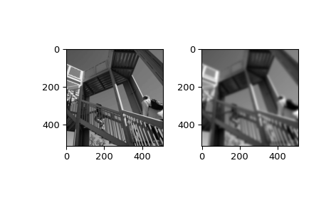

scipy.ndimage.gaussian_filter¶
-
scipy.ndimage.gaussian_filter(input, sigma, order=0, output=None, mode='reflect', cval=0.0, truncate=4.0)[source]¶ Multidimensional Gaussian filter.
- Parameters
- inputarray_like
The input array.
- sigmascalar or sequence of scalars
Standard deviation for Gaussian kernel. The standard deviations of the Gaussian filter are given for each axis as a sequence, or as a single number, in which case it is equal for all axes.
- orderint or sequence of ints, optional
The order of the filter along each axis is given as a sequence of integers, or as a single number. An order of 0 corresponds to convolution with a Gaussian kernel. A positive order corresponds to convolution with that derivative of a Gaussian.
- outputarray or dtype, optional
The array in which to place the output, or the dtype of the returned array. By default an array of the same dtype as input will be created.
- modestr or sequence, optional
The mode parameter determines how the input array is extended when the filter overlaps a border. By passing a sequence of modes with length equal to the number of dimensions of the input array, different modes can be specified along each axis. Default value is ‘reflect’. The valid values and their behavior is as follows:
- ‘reflect’ (d c b a | a b c d | d c b a)
The input is extended by reflecting about the edge of the last pixel. This mode is also sometimes referred to as half-sample symmetric.
- ‘constant’ (k k k k | a b c d | k k k k)
The input is extended by filling all values beyond the edge with the same constant value, defined by the cval parameter.
- ‘nearest’ (a a a a | a b c d | d d d d)
The input is extended by replicating the last pixel.
- ‘mirror’ (d c b | a b c d | c b a)
The input is extended by reflecting about the center of the last pixel. This mode is also sometimes referred to as whole-sample symmetric.
- ‘wrap’ (a b c d | a b c d | a b c d)
The input is extended by wrapping around to the opposite edge.
For consistency with the interpolation functions, the following mode names can also be used:
- ‘grid-constant’
This is a synonym for ‘constant’.
- ‘grid-mirror’
This is a synonym for ‘reflect’.
- ‘grid-wrap’
This is a synonym for ‘wrap’.
- cvalscalar, optional
Value to fill past edges of input if mode is ‘constant’. Default is 0.0.
- truncatefloat
Truncate the filter at this many standard deviations. Default is 4.0.
- Returns
- gaussian_filterndarray
Returned array of same shape as input.
Notes
The multidimensional filter is implemented as a sequence of 1-D convolution filters. The intermediate arrays are stored in the same data type as the output. Therefore, for output types with a limited precision, the results may be imprecise because intermediate results may be stored with insufficient precision.
Examples
>>> from scipy.ndimage import gaussian_filter >>> a = np.arange(50, step=2).reshape((5,5)) >>> a array([[ 0, 2, 4, 6, 8], [10, 12, 14, 16, 18], [20, 22, 24, 26, 28], [30, 32, 34, 36, 38], [40, 42, 44, 46, 48]]) >>> gaussian_filter(a, sigma=1) array([[ 4, 6, 8, 9, 11], [10, 12, 14, 15, 17], [20, 22, 24, 25, 27], [29, 31, 33, 34, 36], [35, 37, 39, 40, 42]])
>>> from scipy import misc >>> import matplotlib.pyplot as plt >>> fig = plt.figure() >>> plt.gray() # show the filtered result in grayscale >>> ax1 = fig.add_subplot(121) # left side >>> ax2 = fig.add_subplot(122) # right side >>> ascent = misc.ascent() >>> result = gaussian_filter(ascent, sigma=5) >>> ax1.imshow(ascent) >>> ax2.imshow(result) >>> plt.show()
